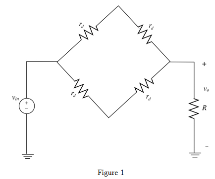
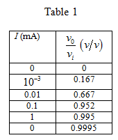

(b)
If the signal current is to be limited to  , change in diode voltage is given by.
, change in diode voltage is given by.
whose value is between 0.9 and 1.1.
Calculate the change in diode voltage for is 0.9.
(a)
For small signal analysis replace the DC current source by open circuit and diode with dynamic resistance is shown in Figure 1.

From Figure 1, output to input voltage ratio is,
The dynamic resistance is,
For the different values of currents the ratio is shown in Table 1.

(b)
If the signal current is to be limited to , change in diode voltage is given by.
whose value is between 0.9 and 1.1.
Calculate the change in diode voltage for is 0.9.
Calculate the change in diode voltage for is 1.1.
Where the input voltage varies in between for signal current is limited to 10% of dc bias current.
Therefore the largest signal voltage is .
Each diode is carrying a current of , for this to be at most 10% of dc current, dc current in each diode must be at least .
Therefore, the minimum value of I must be  .
.
(c)
For and for maximum signal of 10% .
The total current in each diode is .
The corresponding maximum  is,
is,
.
Therefore the largest possible output signal is .
The corresponding peak input can be found by dividing  by transmission factor of 0.995
by transmission factor of 0.995
Calculate the peak input voltage.

The peak in put voltage is .